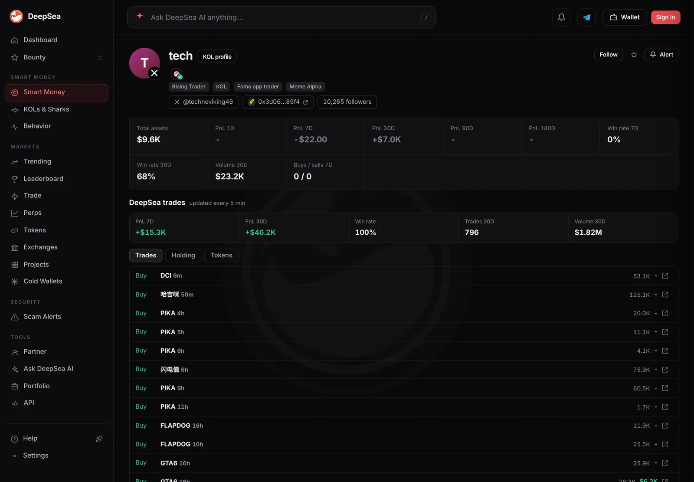

KOL 'tech' bought five PIKA tokens within a second of launch. Each pool now holds under $1
DeepSea logs the BNB Chain wallet buying every new PIKA within one second of launch. DexScreener now shows all five pools with less than $1 of liquidity.
Key points
- DeepSea's trade feed shows the wallet it labels as KOL "tech" buying five different tokens named PIKA on BNB Chain between 2:22 p.m. and 9:23 p.m. ET on November 17.
- DexScreener's pool records match: each buy came in the same second as, or one second after, the PancakeSwap pool for that PIKA was created.
- By 12:50 a.m. ET each pool held $0.18 or less, and all five were down 99.9% or more in 24 hours.
 What DeepSea's data shows
What DeepSea's data shows
DeepSea's wallet page labels this BNB Chain address (ending 89f4) as the KOL tech, an influencer account with 10,265 followers. KOL means key opinion leader. DeepSea's said vs did feed, which matches influencer posts with wallet moves, was last built at 11:33 a.m. ET on November 11 and lists no cases, so this piece covers only what the wallet did.
DeepSea's trade data for the wallet shows 796 trades in 30 days worth $1.82 million, an average hold of about 7 minutes, and a realized gain of $15,348 in 7 days and $46,244 in 30 days. It won all 10 closed trades it could price, but it priced only 49% of the activity. A separate profile box on the same page shows a 7-day result of minus $22, so the two data sets do not agree.
The feed lists five PIKA buys, each a different token contract, with no dollar value attached:
- 2:22 p.m. ET: 1,663 PIKA (contract ending 7777, 0x243c)
- 4:22 p.m.: 60,495 PIKA (0x1243)
- 6:59 p.m.: 4,073 PIKA (0xf1fc)
- 8:20 p.m.: 11,113 PIKA (0x2e2d)
- 9:23 p.m.: 20,008 PIKA (0x96c0)
No PIKA sale appears in the feed, and no PIKA shows in the wallet's holdings list. Earlier on November 17 the same wallet bought meme tokens named after stocks, including SMCI, UBER and BMNR.

Data: DeepSea (desea.io), checked November 18, 2026, 12:45 a.m. ET.
How fast the buys came
Data from DeepSea and DexScreener, which reads PancakeSwap pools on chain. DexScreener dates each PIKA pool to the second: 2:22:24 p.m., 4:22:22 p.m., 6:59:13 p.m., 8:20:18 p.m. and 9:23:22 p.m. ET. DeepSea's buy times are 2:22:25, 4:22:22, 6:59:14, 8:20:19 and 9:23:23. Four buys came one second after the pool opened, and one came in the same second.
The five pools look almost identical. Each traded between $14,817 and $15,751 in 24 hours, with 79 to 82 buys and 132 to 136 sells. Each now holds 6 to 18 cents of liquidity and has a stated value of $1 to $4. All five show 24-hour falls of 99.94% to 99.99%.
24-hour trading in the five PIKA pools
US$ thousand
Source: DexScreener and DexScreener, read 12:50 a.m. ET, November 18, 2026
What a pool is, and why seconds matter
A pool is the pot of two tokens that lets people swap one for the other on an exchange such as PancakeSwap. Liquidity is how much money sits in it. When a pool holds a few cents, a token cannot be sold for real money. Buying in the same second a pool opens usually takes an automated tool. DeepSea does not say whether tech used one, who launched the PIKA tokens, or what the wallet paid. A KOL label is DeepSea's attribution; we did not confirm ownership with the influencer.

LC Insight analysis
This section is our reading of the facts above, not a statement of fact.
- We think the pattern matters more than the size: five copies of one token name, each bought within a second of launch, point to fast, repeated launch buying rather than a considered bet.
- The near-identical trade counts across the five pools suggest the same launch template each time. That is an inference from the data, not a finding about who is behind it.
- Followers who copy a wallet like this would arrive after the launch second, when the numbers above show the pools emptied.
What's next
- Whether a sixth PIKA appears and the wallet buys it at launch
- Whether DeepSea's said vs did feed is rebuilt with posts from tech
- Whether DeepSea prices these trades and the 7-day gain changes
Disclaimer. This article is based on public information and the sources listed below as of the update time shown. It is for information only and is not investment, legal or tax advice. Figures may change as companies and authorities publish new data.
Sources
- DeepSea, wallet page and trade feed for tech (read November 18, 2026, 12:45 a.m. ET)
- DeepSea, said vs did feed (built November 11, 2026, 11:33 a.m. ET; read November 18, 2026, 12:36 a.m. ET)
- DeepSea, KOLs leaderboard (read November 18, 2026, 12:44 a.m. ET)
- DexScreener, four PIKA pools on PancakeSwap (read November 18, 2026, 12:50 a.m. ET)
- DexScreener, PIKA pool 0x1243 (read November 18, 2026, 12:48 a.m. ET)